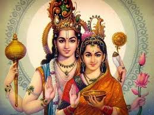

Shukla Ekadashi and Dwadashi:
The 11th and 12th days of the bright half of every month in the Hindu calendar is of special significance to the temple. This is because Barbarika was born on the 11th day of the bright half of the month of Kartika, and he donated his head (Sheesh) to Krishna on the 12th day of the bright half of the month of phaagun on Tuesday. Darshan on these two days is therefore considered auspicious and devotees come in their thousands every month.